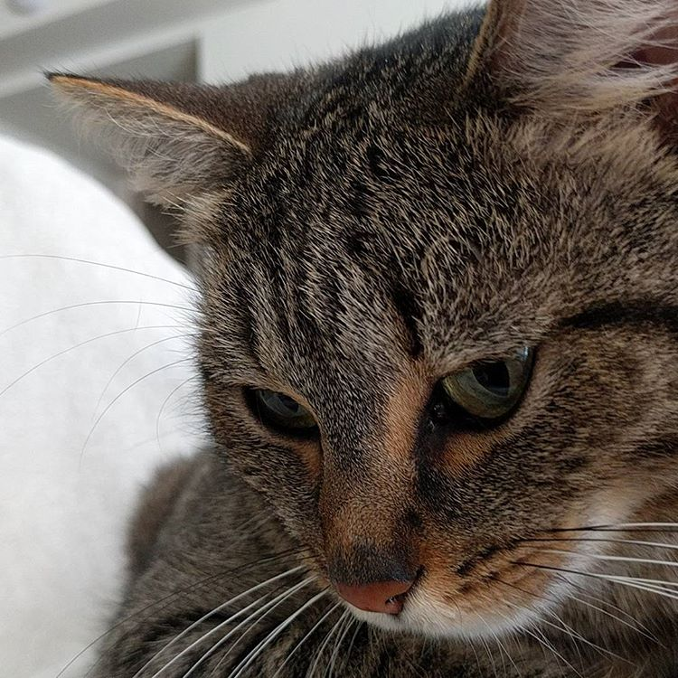

Here's the crew!
Here's a few of my friends! More to come as I work on the site !
-
Chomp
Chomp is a Lampropeltis getula californiae, more commonly known as a California Kingsnake. The genus
name
Lampropeltis means shiny shield, refering to the irridescent scales of all snakes in the genus. The
common name kingsnake comes from the fact that they are known to eat other snakes, including rattlesnakes! They
have a reputation of thinking everything is food. Can you tell why this one is named Chomp?
-

Bartholomew Lizardo McMullen
This guy usually just goes by Bart. He is a Fire Skink,
Lepidothyris fernandi. He's about six inches long, but could reach up to fifteen inches in the next
year or two. There's a distinct possibility that Bart is actually female. Fire skinks are notoriously hard to
sex. Sometimes even after they breed you don't know which is the father, and which is the mother!
-

Ember
Ember is a domestic cat, Felis catus or Felis silvestris catus. Her picture is bigger than
the rest because she's a diva, and she'd be upset otherwise. She likes attention, but only on her terms. 1 pat
too many results in a swift bite to the hand. Domestic cats are one of the most succesful and widely established
predators on the planet. Feral cats, and pets that are allowed to free roam outdoors are devastating to wild
bird populations, which in turn effects the rest of the ecosystem around them. Also, when a cat brings you a
present, it's a sign of affection, as well as a sign that your cat thinks you might be stupid. They think that
you are incapable of hunting, so they bring you food, and will sometimes try to teach you to hunt!